01 Where UECM sits
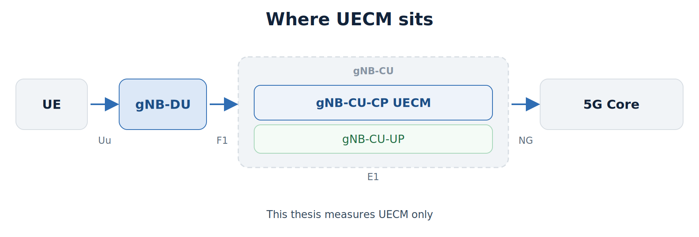
02 UE context lifecycle
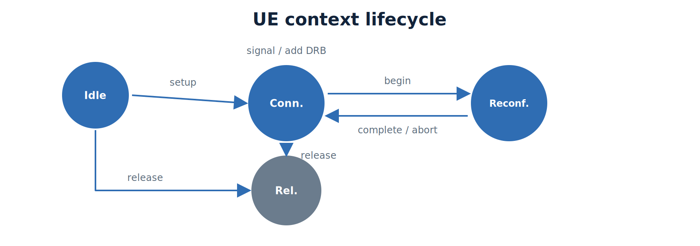
03 Shared-nothing shards
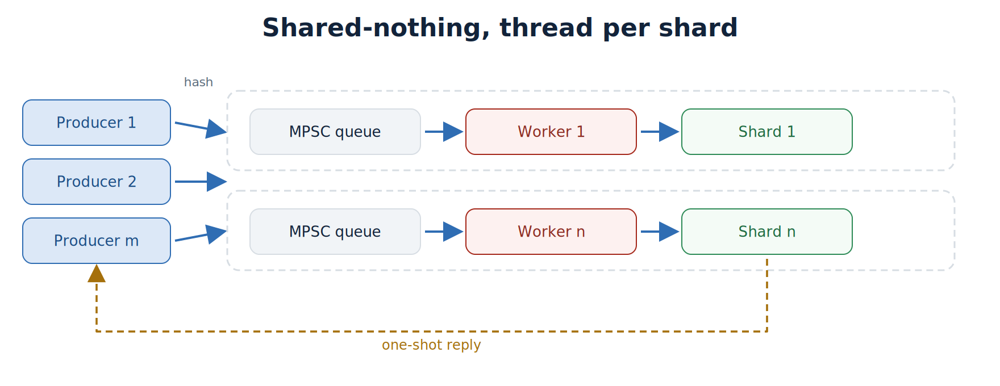
04 One request
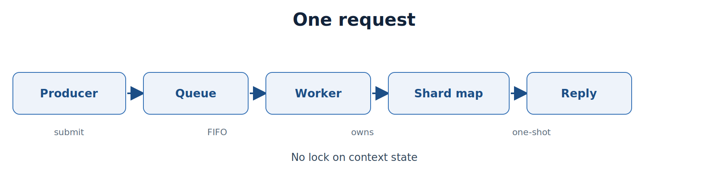
05 Two workloads
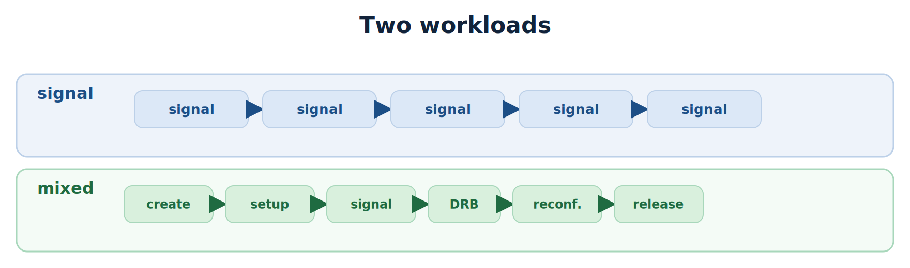
06 Four variants
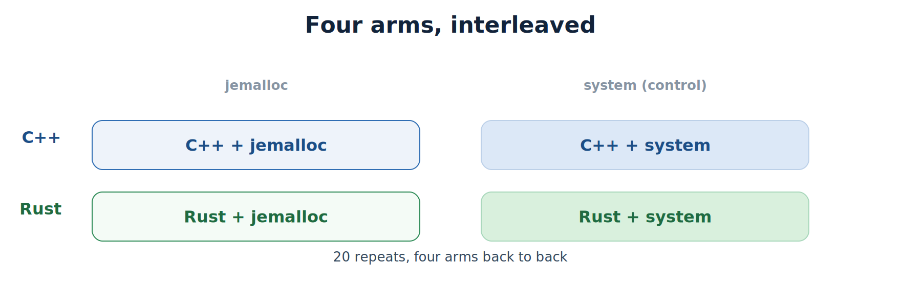
07 Open loop
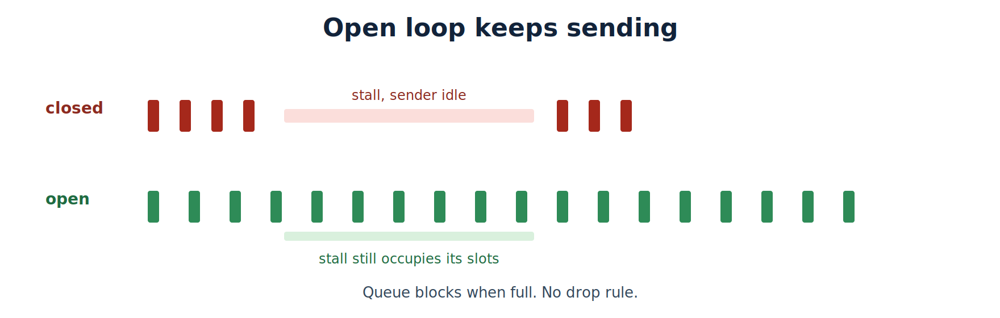
08 Load regimes
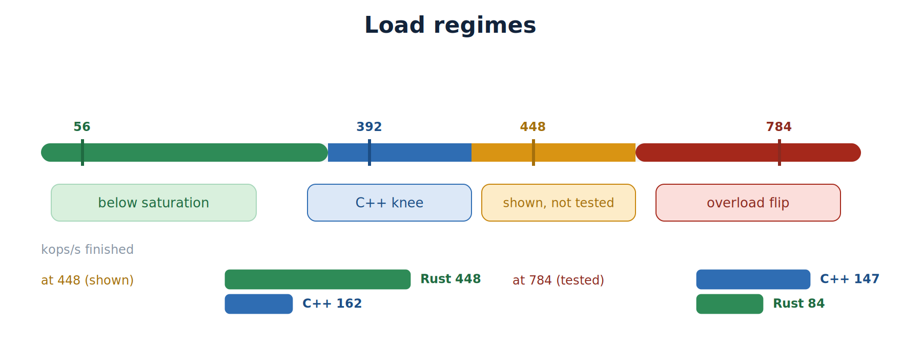
09 What the clock times
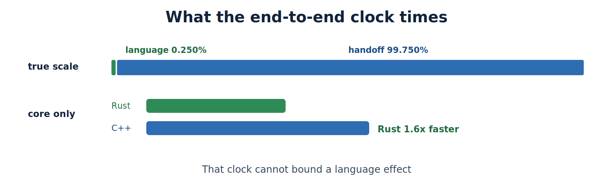
10 Where the guarantee stops
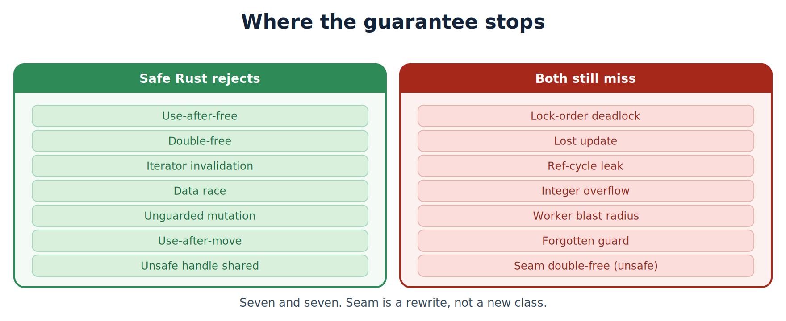
11 FFI seam
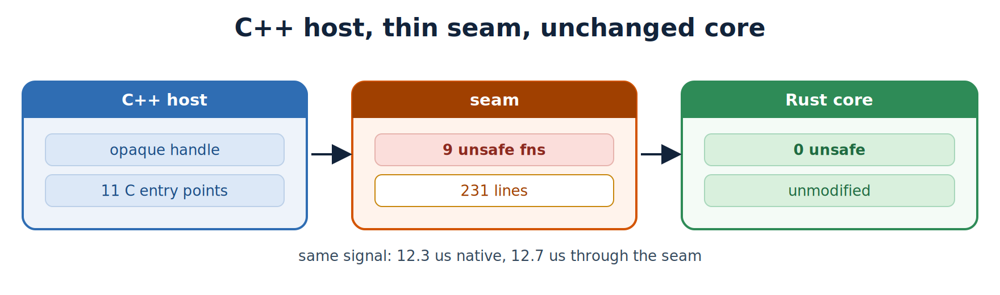
12 Interleaved repeat
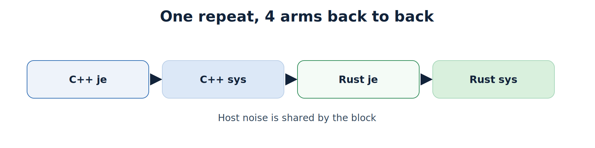
13 Four answers
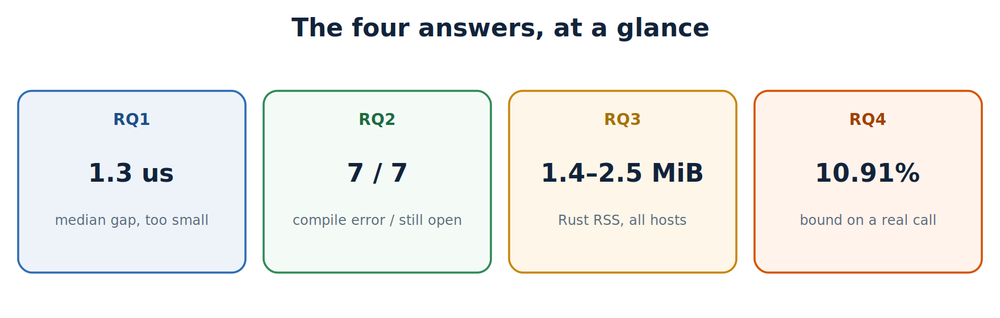
14 Three concurrency words
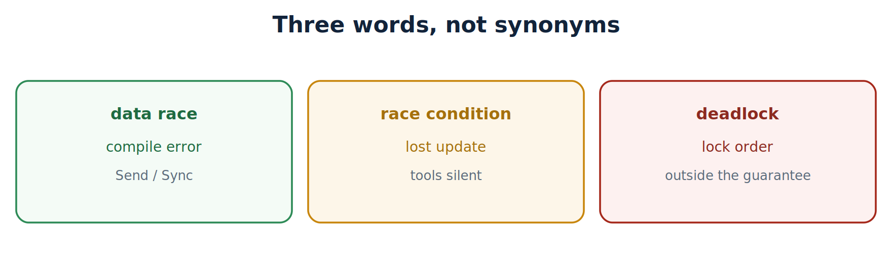
15 Hypothesis verdicts
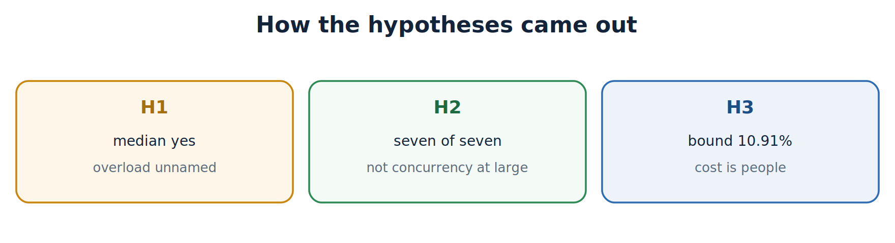
16 Two RSS effects
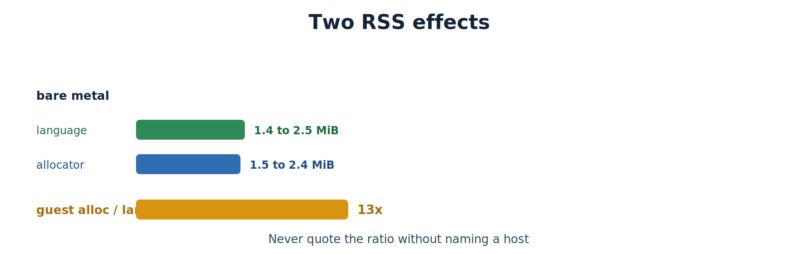